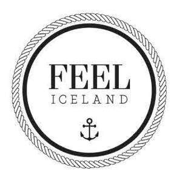

Trade Mark Journal No.2025/045 7 November 2025
UK00004251945 20 August 2025 (3,5)

- Class 3
- Skin care cosmetics; Exfoliants for the care of the skin; Essences for skin care; Skin care mousse; Skin care preparations; Skin care oils [cosmetic]; Skin care lotions [cosmetic]; Skin care creams [cosmetic]; Cosmetic creams for skin care; Cleansing milks for skin care; Milky lotions for skin care; Skin care creams, other than for medical use; Skin care oils [non-medicated]; Skin care (Cosmetic preparations for -); Cosmetic preparations for skin care; Hand masks for skin care; Foot masks for skin care; Skin, eye and nail care preparations; Non-medicated skin care preparations; Perfumed oils for skin care; Wrinkle removing skin care preparations; Hair care creams; Body care cosmetics; Hair care lotions; Hair care serums; Hair care serum; Cosmetics for use in the treatment of wrinkled skin; Hair care creams [for cosmetic use]; Hair care lotions [for cosmetic use]; Beauty creams for body care; Lotions for face and body care; Hair care masks; Cosmetic products in the form of aerosols for skin care; Cosmetics for the treatment of dry skin; Sun care lotions; Sun care lotions [for cosmetic use]; Skin moisturizers; Skin moisturizer; Soaps for body care; Hair care agents; Cosmetics for protecting the skin from sunburn; Hair care preparations; Cosmetic hair care preparations; Facial care preparations; Cosmetic preparations for body care; Skin lotions; Lotions for the skin; Skin emollients; Deodorants for body care; Skin lotion; Skin moisturisers; Skin make-up; Skin moisturiser; Preparations for the care of the body; Eye care products, non-medicated; Beauty care cosmetics; Skin cleansers; Skin hydrators; Skin moisturizers used as cosmetics; Skin creams; Creams for the skin; Body cleaning and beauty care preparations; Oil baths for hair care; Moisturizing preparations for the skin; Skin cleansers [cosmetic]; Skin lighteners; Skin cleansing lotion; Cosmetic nail care preparations; Moisturising skin lotions [cosmetic]; Beauty care preparations; Non-medicated body care preparations; Skin creams [for cosmetic use]; Skin relief serum [cosmetic]; Cosmetic creams for the skin; Skin creams [cosmetic]; Non-medicated skin serums; Skin moisturizer masks; Skin balms [cosmetic]; Colour cosmetics for the skin; Cosmetic creams for dry skin; Oils for the skin; Skin cream; Sun care preparations for cosmetic use; Skin conditioners; Moisturising skin creams [cosmetic].
- Class 5
- Food supplements; Dietary food supplements; Food supplements for dietetic use; Calcium tablets as a food supplement; Anti-oxidant food supplements; Dietary supplement drinks; Food supplements for veterinary use; Medicated food supplements; Food supplements for sportsmen; Vitamin and mineral food supplements; Dietary food supplements used for modified fasting; Dietary supplement drink mixes; Vitamin preparations in the nature of food supplements; Food supplements for medical purposes; Food supplements in liquid form; Nutraceuticals for use as a dietary supplement; Health food supplements made principally of vitamins; Nutritional supplement meal replacement bars for boosting energy; Antibiotic food supplements for animals; Health food supplements made principally of minerals; Food supplements for non-medical purposes; Powdered nutritional supplement drink mix; Nutritional supplement energy bars; Nutritional supplements for livestock feed; Powdered nutritional supplement energy drink mix; Health food supplements for persons with special dietary requirements; Dietary supplemental drinks; Nutritional supplements; Dietary and nutritional supplements; Dietary supplements; Nutritional supplements for veterinary use; Liquid nutritional supplements; Dietary supplements for pets in the nature of a powdered drink mix; Liquid dietary supplements; Powdered fruit-flavored dietary supplement drink mix; Dietary supplements for pets; Dietary supplements for animals; Protein dietary supplements; Dietary supplements for medical use; Nutritional drink mix for use as a meal replacement; Mineral nutritional supplements; Mineral dietary supplements; Dietary supplements consisting of vitamins; Dietary supplements and dietetic preparations; Yeast dietary supplements; Glucose dietary supplements; Protein powder dietary supplements; Food supplements consisting of trace elements; Chlorella dietary supplements; Food supplements consisting of amino acids; Energy gels (dietary supplements); Zinc dietary supplements; Enzyme dietary supplements; Dietary supplements in powder form.
The ASKA Group Ltd.
Feel Iceland ehf.